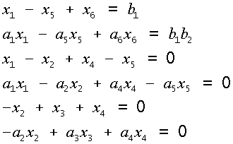
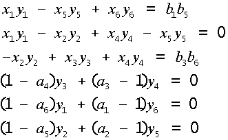

Methods of computer algebra for deciding the incorrect problems in chemical technologies
Gurin N.I., Pinaev G.F.
Belorussian state technological university, Minsk, Belarus
Full paper in compressed Postscript *.ps.gzSummary
Material balance a chemist-technological systems is described by linear algebraic equation systems, which noncorrectness is expressed in part of factors under unknown also are unknown. General principle of deciding such problems consists in the separation from the general equation system with known equations, but then substitution of their deciding in stayed incorrect part of systems. Intermediate deciding it is necessary to get in the analytical type that possible only with using the methods of computer algebra. With using a system REDUCE was a speech a problem on the calculation a peelings of mountain sorts by three-step-like washing, which is reduced to deciding an equation system of material balance 12 orders.
At the clear of mountain sorts in the different sort an dissolve greater value has an efficient using the available resources, since are here touched questions of ecology. As a rule, for the peelings is used multistep-like system an washing, in which central to organizations process models are equations of material balance of sort and washing liquids.
Material balance a chemist-technological systems is described by single-line algebraic equation systems, which particularity is their "noncorrectness". It consists in that that in specified equations unknown are not only variable - values of flows of technological mixtures, as well as part of factors under specified variable - contentses of components in flows, because of what these equations become nonlinear.
General strategy of deciding the similar problems consists in that that from the general linear equation system stands out and solving a “correct” subsystem, where all factors determined. Then tinned deciding are substituted in the “incorrect” subsystem, which after such substitutions turns out to be “correct” and allowed. However as far as use numerical methods for deciding a problem on the first stage it is impossible, for calculations of multistep-like processes a peelings of deciding turn out to be rather bulky and for their a finding methods of computer algebra are sufficiently efficient.
In work with using the methods of computer algebra received in the analytical type a decision of problem of calculation 3-a step-like system counterexact washing of dissolves by water. Accounting model is described by the system from 12 equations, amongst which there "noncorrect”, with 12 unknowns and 12 parameters. That are equations of material balance and additional correlations, expressing condition of constancy to concentrations the salts in the fluid phase a plum and sediment on each stage of washing. In general a system possible to present as follows (x, y - unknown; a, b - parameters):


Herewith first 6 equations single-line comparatively unknown h, but last 6 equations single-line comparatively unknown y, though the whole system as a whole nonlinear comparatively unknown h, beside. However, solvable first part of systems of single-line equations comparatively h, but then second part of systems beside comparatively and having substituted decision first in tinned decision second we get full decision of putting (deliver) problem in the analytical type. Expressions for sought unknown x, y are itself sufficiently bulky expressions - before 130 members of products of parameters a, b in degrees from 0 before 3.